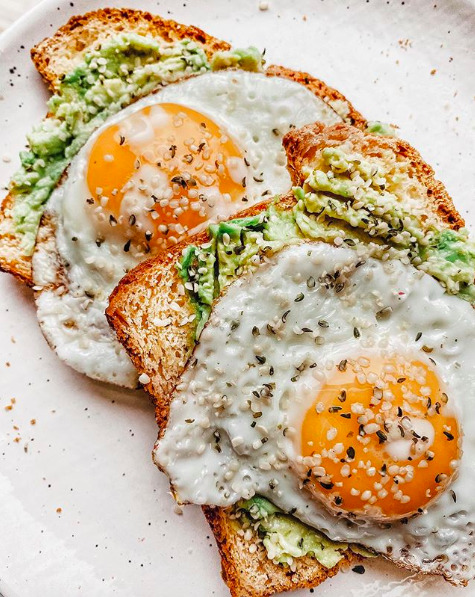

Home
Budget Biohacked Eggs and Avocado Toast

Description
Delicious organic, nutrient rich eggs (approved by Nate Belmar) topped with hemp seeds.
Served with Avocado for delicious healthy fats and non GMO, organic wholemeal bread.
Breakfast is a scam but as they say in Thailand "Phuket, we ball"
Ingredients
- 4 Organic, Pasture raised, Cruelty free, Grass fed, Grass finished eggs
- 25g Hemp Seeds
- 25g Grass fed, grass finished butter
- 1/2 Organic Avocado
- 2 slices organic, 6x filtered, grass fed, grass finished, atrozine free, reverse osmosis, wholemeal bread
Instructions
- Put your stainless steel pan or skillet on the stove on medium heat with the butter in the pan. Let the butter caramalise.
- Slice your Avocado in half and using a fork, mash that thang until it resembles guac. Add salt and pepper to liking.
- By now, your butter should be have a nice golden sheen to it. Aggressively, one by one, crack your eggs into the pan.
- Add salt and pepper to your liking.
- Chuck your two slices of bread into the toaster
- Once the bread is toasted, generously and delicately spread the avocado onto the bread.
- Dump your delicious eggs onto the two slices of bread.
- Generously sprinkle your hemp seeds onto the eggs
- Serve with a side of purified, reverse osmosis water and enjoy eating with your shawty.
- Remember that you are a front end developer and shawty left you for that fucking full stack nerd
- Cry yourself to sleep
- Rise and grind the next day because you remember that women are a distraction from women and homelessness won't cure itself.
Note: Since we want that liquid gold running down our oesophagus, we will not be turning the eggs over.